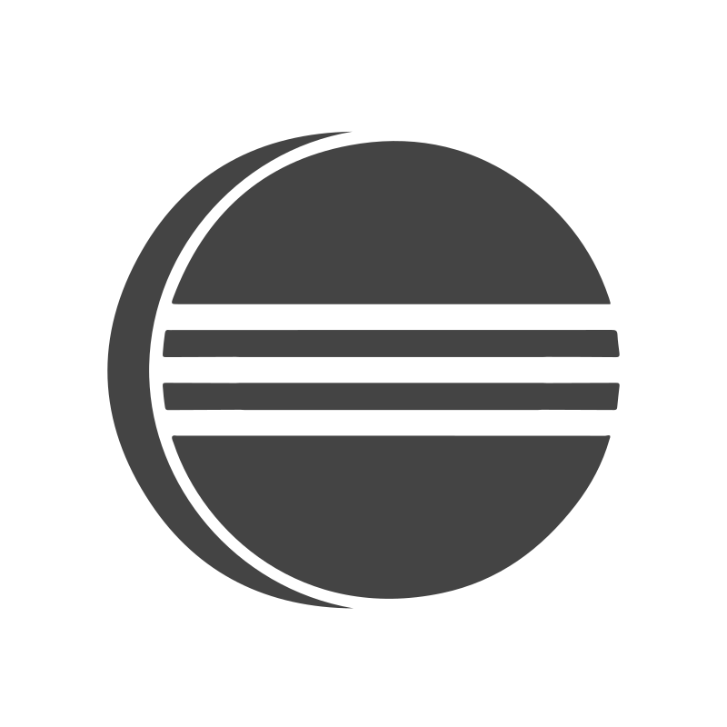
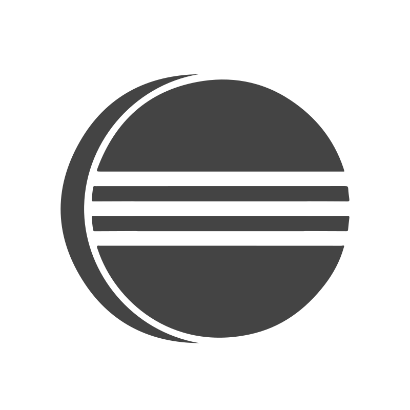

Sobre mí
Soy estudiante de Desarrollo de Aplicaciones Multiplataforma, con formación previa en Comunicación Audiovisual y experiencia en atención al cliente. Esta trayectoria me ha permitido combinar habilidades técnicas y comunicativas, desarrollando competencias en programación, diseño de interfaces y gestión de bases de datos, junto con una visión creativa y estructurada del contenido digital.
Gracias a mi experiencia laboral, he reforzado aptitudes como la escucha activa, la empatía y la resolución de problemas en tiempo real. Me interesa crear soluciones tecnológicas intuitivas y accesibles, pensadas para el usuario, y abordar el desarrollo desde una perspectiva integral: no solo cómo funcionan, sino cómo se usan y se sienten.
Tecnologías
 Java
Java
 JavaScript
JavaScript
 HTML
HTML
 CSS
CSS
 PHP
PHP
 MySQL
MySQL
 PhpMyAdmin
PhpMyAdmin
 Node.js
Node.js
 Visual Studio Code

Eclipse
Visual Studio Code

Eclipse
 Android Studio
Docker
Android Studio
Docker
 GitHub
GitHub
Experiencia relevante
Atención al cliente multicanal, resolución de incidencias y uso de herramientas digitales.
Fecha: Marzo 2018 - Actualidad
Gestión de contenidos, redes sociales y diseño corporativo.
Fecha: Junio 2015 - Marzo 2016
Proyectos
RPG Dragon Repeller
Aventura RPG de texto con exploración, combate y humor oculto.
Leer más
Dragon Repeller es un sencillo juego RPG de texto en el que el jugador debe derrotar a un dragón que impide a los habitantes abandonar el pueblo. La aventura transcurre entre varios escenarios como la plaza principal, una tienda, una cueva y una arena de combate. El jugador puede desplazarse entre estas ubicaciones, comprar y vender armas, luchar contra monstruos y ganar experiencia y oro. El juego hace un seguimiento continuo de la salud, el oro y la experiencia del personaje, actualizando su estado en tiempo real. Además, incluye huevos de pascua ocultos que añaden un toque de humor al desarrollo. El objetivo final es vencer al dragón y liberar al pueblo.
El juego está desarrollado con HTML, CSS y JavaScript.
 Repositorio RPG Dragon Repeller
Demo
Repositorio RPG Dragon Repeller
Demo

GameShelf
Gestión inteligente y personal de colecciones de videojuegos desde tu móvil.
Leer más
GameShelf es una aplicación móvil multiplataforma enfocada en la organización de bibliotecas personales de videojuegos. Desarrollada con React Native y Expo, permite a los usuarios registrar, buscar, filtrar y consultar información sobre juegos completados, en curso o por adquirir. La app se conecta a una base de datos MySQL gestionada a través de phpMyAdmin, lo que permite un control dinámico de la información.
Para su desarrollo, se emplearon tecnologías como JavaScript, TypeScript y Node.js, y se utilizó AsyncStorage para simular el almacenamiento de sesiones de usuario. El entorno de trabajo fue Visual Studio Code, y se testeo la aplicación en dispositivos reales con Expo Go. Gracias a XAMPP, se configuró un entorno local de pruebas que facilitó la integración entre frontend y backend.
Repositorio GameShelf
Migración y rediseño web de CAFD: De WordPress a Drupal
Proyecto de migración y rediseño de la web de la CAFD, pasando de WordPress a Drupal.
Leer más
Durante mis prácticas formativas, tuve la oportunidad de integrarme en un equipo ágil y trabajar en un entorno real de desarrollo, donde pude:
🔴 Explorar y aplicar tecnologías como Drupal, PHP y Docker, ampliando significativamente mis conocimientos técnicos.
🔴 Fortalecer mis habilidades en Git y GitHub, participando activamente en flujos de trabajo colaborativos.
🔴 Sumergirme en la metodología Scrum, comprendiendo su dinámica y beneficios en proyectos reales.
En este desarrollo me centré especialmente en el backend, implementando funcionalidades y gestionando la lógica del servidor. Además, colaboré en el frontend, aplicando estilos específicos según las necesidades del diseño, y asumí la responsabilidad completa del apartado legal, desarrollando las secciones de Política de privacidad y Cookies conforme a la normativa vigente.
Repositorio Migración CAFD
Formación
Formación enfocada en el diseño, desarrollo y mantenimiento de aplicaciones multiplataforma, abarcando desde programación orientada a objetos hasta bases de datos y entornos web. Incluye prácticas profesionales en empresa con enfoque en desarrollo ágil y tecnologías actuales del sector.
Fecha: Octubre 2023 - Junio 2025